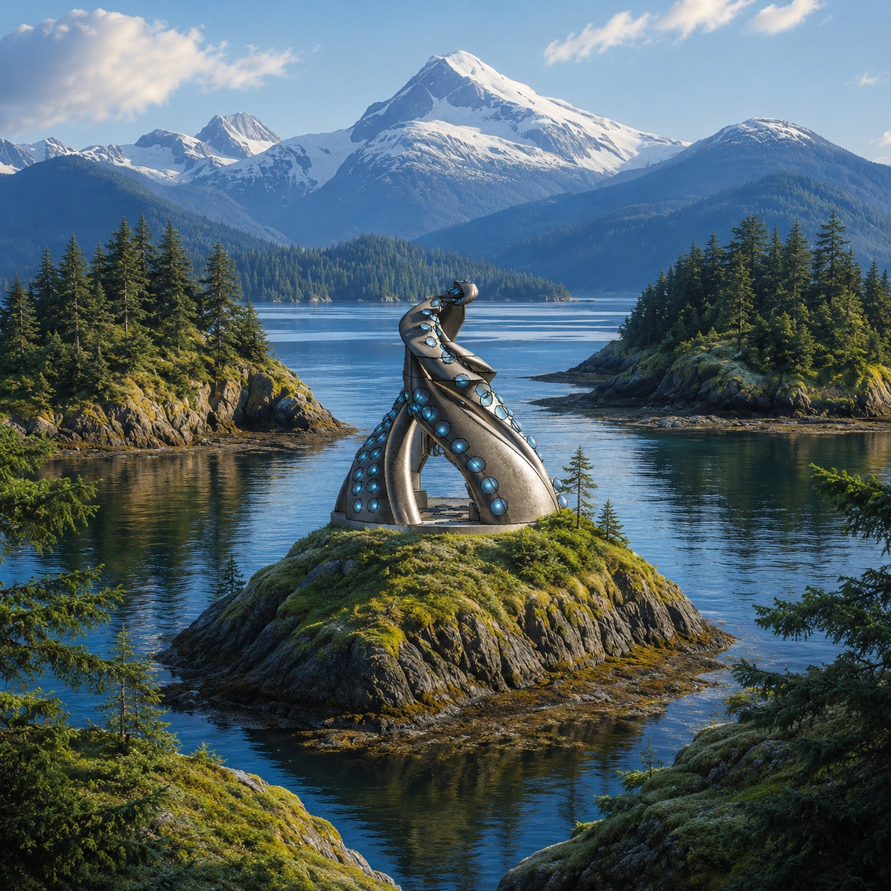
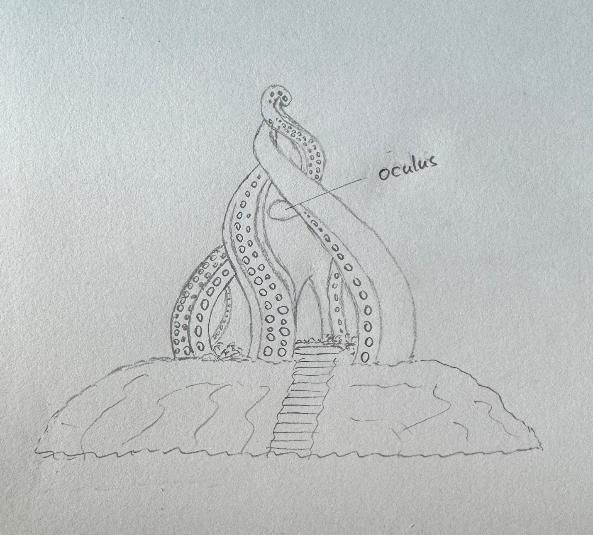
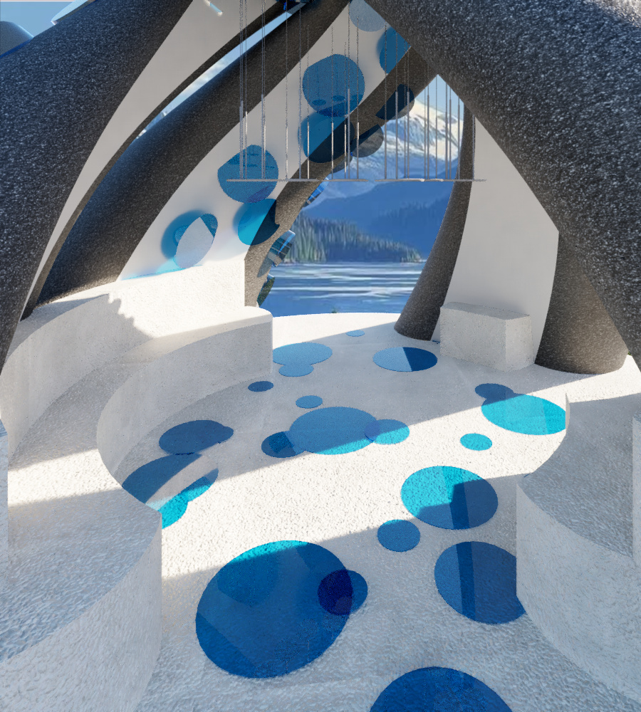
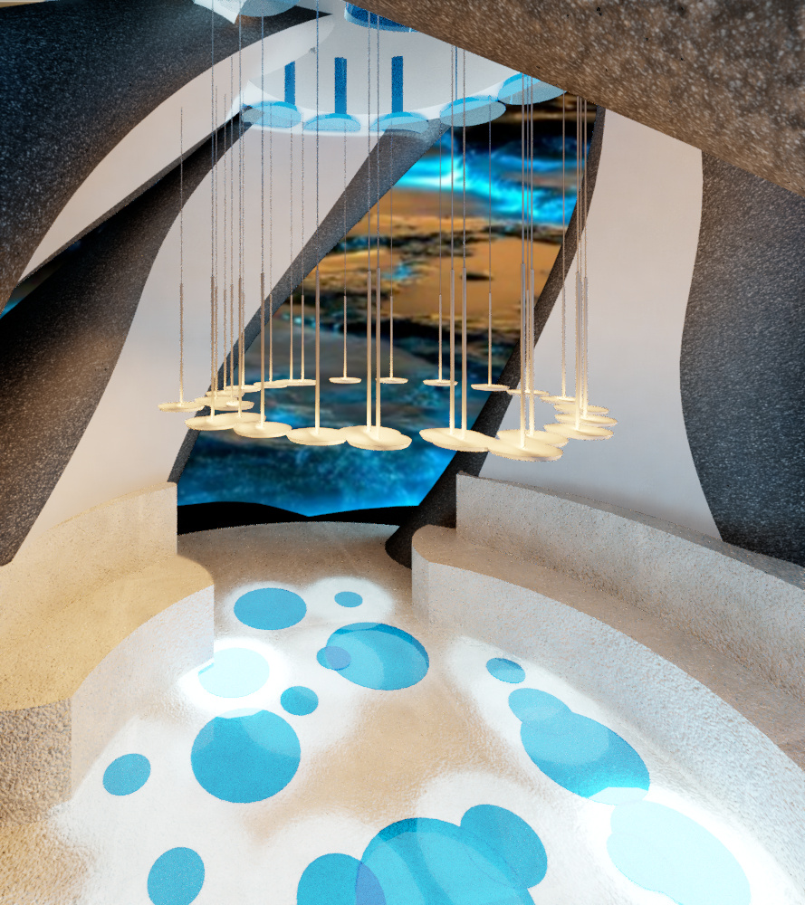
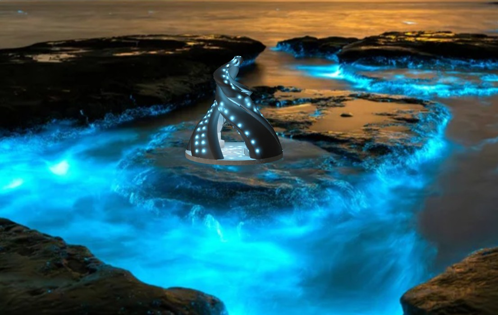

A small atmospheric sea-chamber that rises from rock and water toward the sky
Course: ARCH X482.1-029 — Design Studio I
Instructor: Samuel Mathau, AIA, APA
Role: Student Designer
Assignment: Architect's Folly Design (Problem #2)
Precedent Architect: Smiljan Radić Clarke — 2026 Pritzker Laureate
Site: San Juan Islands, Washington
Tools: Revit, Hand Sketching, Digital Rendering

Tentacle Folly is a small atmospheric retreat on the San Juan Islands, Washington. The design began from a playful visual memory — a tentacle-shaped object noticed in Hotel Transylvania — and developed through the poetic method of Smiljan Radić. Layered with Alfred, Lord Tennyson's poem "The Kraken," the folly turns images of giant arms, hidden grottoes, and rising movement into four sculptural tentacle ribs wrapping a central pause chamber.
A narrow path leads visitors into a glowing bioluminescent interior with curved seating, a reflective floor, and an oculus that frames the sky. The dark basalt shell anchors the folly to the rock; the pale glowing interior becomes a quiet sea-chamber for reflection.
1
Image
2
Poem
3
Mass
4
Light
5
Path
6
Pause
Smiljan Radić Clarke is a Chilean architect known for poetic, atmospheric, site-specific work — the 2026 Pritzker Laureate. His designs create feelings of shelter, mystery, memory, and wonder rather than only solving a function. Each project answers its own site, story, material, and atmosphere.
I studied his House for the Poem of the Right Angle (Vilches, Chile, 2010–12) — a black concrete mass among oak trees with a cedar interior and branch ceiling, where the forest continues indoors. The house was built directly from a text: Le Corbusier's poem became the house's massing, not just its mood.
Radić gives me permission to think emotionally and poetically. A small structure can still feel powerful if it creates a strong atmosphere. I use the same process, not his forms.
The method, translated:
Radić: poem → shell-like house → skylights → hidden interior → landscape
Mine: image + Kraken → tentacle ribs → oculus → glowing chamber → island & water
Note: All student design work shown is my own original response to the study brief. The precedent architect's work is referenced for educational analysis.
Alfred, Lord Tennyson's poem provided the emotional and spatial atmosphere behind the form:
Below the thunders of the upper deep,
Far, far beneath in the abysmal sea,
His ancient, dreamless, uninvaded sleep
The Kraken sleepeth…
…In roaring he shall rise…
Three spatial ideas drawn from the poem:
The San Juan Islands sit in the cold, nutrient-rich Salish Sea — one of the best places on Earth to find the Giant Pacific Octopus, the largest octopus species alive. The very creature behind the tentacle form lives in these waters.
Approach sequence: Island edge → Stone path → Narrow entry → Glowing chamber
Views framed: Main opening toward water and horizon, oculus toward sky above, side openings toward island and mountains.
The dark basalt ribs read as if they grow from the island rock. Blue niches and a bioluminescent floor bring the surrounding water inside.
The tentacle form began as freehand pencil studies — the exterior works out the four twisting ribs, the labeled oculus, and the entry stair; the interior places the oculus, curved seating, and the tentacle-sucker niches.

Four structural tentacle ribs wrap a central circular chamber, creating openings and a curled skyline. The ribs twist upward like rising arms; each curves differently, so the form reads as organic rather than mechanical. Suction-cup circles run along the ribs as a recognizable tentacle pattern.
20' × 20'
Approved footprint
20'-0"
Overall height
14'-0" ∅
Interior chamber
4'-0" ∅
Oculus / skylight
Inside, the space becomes lighter and more intimate: a pale shell-like interior, blue glowing niches, suspended light, a reflective floor, and built-in curved seating. The visitor sits, looks up through the oculus, and out through framed openings toward water and mountains.

In Radić's house, branches make the forest continue indoors. In my folly, the glowing blue floor becomes a continuation of the bioluminescent water around the San Juan Islands — the sea's light appears to enter the chamber, spread across the floor, and rise into the blue niches of the ribs.

Dark basalt concrete — a monolithic mass anchoring the folly to the rocky island.
Pale shell plaster — smooth, light surfaces make the chamber calm and intimate.
Blue bioluminescent glass — glowing niches suggest underwater light and sea life.
Reflective water-like floor — mirrors the oculus and blue light, bringing the sea's glow indoors.
The folly transforms between day and night. By day, the dark basalt ribs stand against the Salish Sea and snow-capped peaks. At night, the bioluminescent niches glow and the surrounding waters come alive.

Ribs twist upward like rising tentacles.
Dark exterior vs. pale glowing interior.
Blue circular niches repeat along the ribs.
Every element relates to the sea concept.
Four ribs form a balanced circular whole.
Each rib curves differently — organic.
The tentacle form rises upward from below the land and water toward the sky — which, for me, means growth and transformation.
AI Disclosure: Visualization renderings were generated with AI-assisted tools and composited with the Revit model to communicate design intent. The architectural design, concept development, Revit modeling, hand sketches, plans, elevations, sections, and all design decisions are my own original academic work.